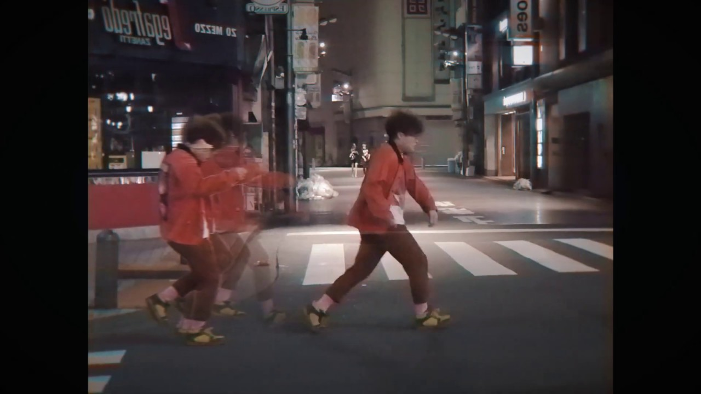
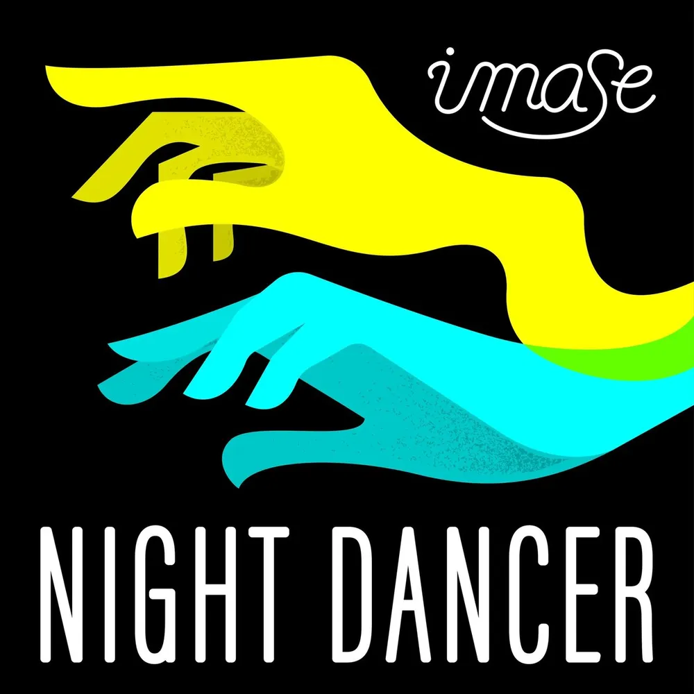

| 東京フラッシュ | 君の花になる | NIGHT DANCER |

사진을 누르면 이동합니다.
東京フラッシュ
君の目が覚めたら
どこへ行こうどこへ行こう
変わらないよ
東京フラッシュ
君と手を繋いだら
どこへ行こうどこへ行こう
変わらないよ
東京フラッシュ
도쿄 플래시
네가 눈을 뜨면
어디로 갈까 어디로 갈까
변하지 않아
도쿄 플래시
너와 손을 잡으면
어디로 갈까 어디로 갈까
변하지 않아
도쿄 플래시
슬픈 날엔 산책만큼 좋은 게 없죠!
도쿄의 밤거리 분위기가 물씬 나는 노래는 어떠세요?
もう戻れないことも わかっている
それでも向かうのは
希望が前にしかないから
進んでみよう それが道となる
Take you far
まだ見ぬその景色たちを
いつだって君と見たいのさ
Don't worry 'cause I'm with you
ひとりじゃない
世界でひとつの 君の花になる
이젠 돌아갈 수 없는 것도 알고 있어
그래도 향하는 건
희망이 앞에 밖에 없으니까
나아가보자 그게 길이 될거야
Take you far
아직 보지 못한 그 풍경들을 언제라도 너와 보고 싶어
Don't worry 'cause I'm with you
혼자가 아니야
세계에서 하나 뿐인 너의 꽃이 될게
너만의 꽃이 될게!
왠지 모르게 위로해주는 듯한 가사라 추천해요.

사진을 누르면 이동합니다.
どうでもいいような 夜よるだけど
響どよめき 煌きらめきと君きみも
まだ止とまった 刻きざむ針はりも
入いり浸ひたった 散ちらかる部屋へやも
変かわらないね 思おもい出だしては
二人ふたり 歳としを重かさねてた
또 때론 의미 없는 밤이더라도
울림과 반짝임과 너도
아직 멈춘 새기는 바늘도
틀어 박혀서 흩어지는 방도
변하지 않는구나, 떠올리고선
둘이서 나이를 먹었어
정말 인상적이고 중독되는 멜로디!
유독 무기력한 날에 들어보세요.